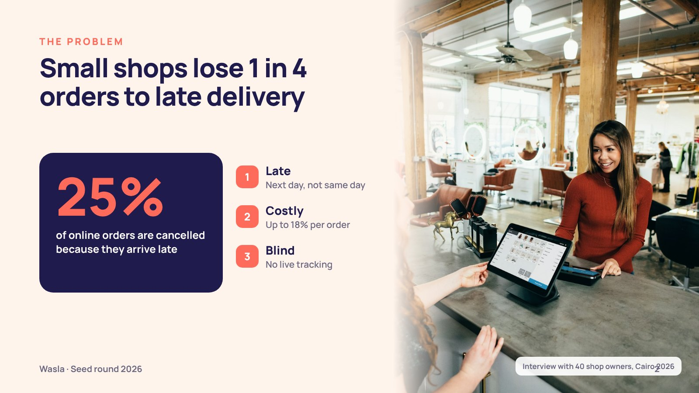
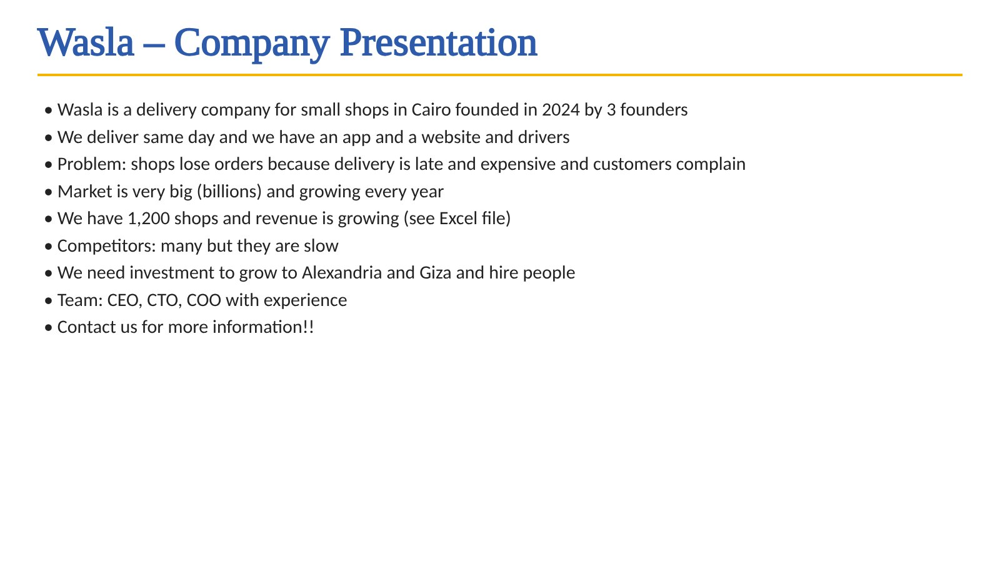

Investor pitch deck
A clear story investors follow: problem, market, traction, then the ask.
Online nowI reply myself in 15–30 minutes


Before and after
Drag to compare


Watch me work on it
How I work
- 1Plan the story
- 2One message per slide
- 3Numbers become charts
Investors read the title first, so each title is the message.
The ask gets its own slide: how much, what for, and by when.
Samples


Packages
Fixed price. No extra fees.
- Unlimited revisions
- Editable source file + PDF
- Pay after a watermarked preview
- Financial charts
- Unlimited revisions
- Editable source file + PDF
- Pay after a watermarked preview
- Financial charts
- Speaker notes
- Unlimited revisions
- Editable source file + PDF
- Pay after a watermarked preview
Compare packages
| Starter | Standard | Premium | |
|---|---|---|---|
| Size | Up to 12 slides | Up to 20 slides | Up to 30 slides |
| Delivery | Within 24 hours | Within 24 hours | Within 24 hours |
| My price | $130 | $190 | $260 |
| Financial charts | — | ✓ | ✓ |
| Speaker notes | — | — | ✓ |
| Unlimited revisions | ✓ | ✓ | ✓ |
| Editable source file + PDF | ✓ | ✓ | ✓ |
| High-quality images and icons | ✓ | ✓ | ✓ |
| Your colours, fonts and logo | ✓ | ✓ | ✓ |
| Checked 3 times | ✓ | ✓ | ✓ |
| Pay after a watermarked preview | ✓ | ✓ | ✓ |
See it on stage
See your slide where you will present it.

Questions
Do I pay before I see anything?
No. You see your file with a watermark first. You pay, then you get the clean files.
How many changes can I ask for?
As many as you need on the same order, until you are happy.
What files do I get?
The editable source file (PPTX, DOCX or XLSX) and a PDF.
Is my file kept private?
Yes. I never show client files. Every sample here is my own concept design.
What time zone do you work in?
{tz}. I’m online 9:00–23:00 my time, and every delivery date on this site is shown in your own time.
Send me your file.
You get a fixed price and a delivery time first.
Online nowI reply myself in 15–30 minutes